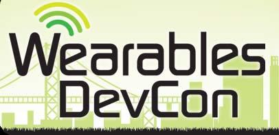

<link rel="import" href="bower_components/polymer/polymer.html">
<link rel="import" href="bower_components/core-icon-button/core-icon-button.html">
<link rel="import" href="post-card.html">

<polymer-element name="speaking-cards">

  <template>

    <post-card>
	
	<h2>Mobile+Web Devcon 2014</h2>
	<p>After the Wearables Devcon 2014, Jake Steinerman and I were recommended by one of the keynote speakers to give a talk at the Mobile+Web Devcon in Chicago. Being that this conference was much less Google Glass focused, our presentation was primarily about the challenges when designing applications for Glass and some of the issues with the platform.</p>
     </post-card>

     <post-card>
	     
	     <h2>Wearables Devcon 2014</h2>
	     <p>Thanks to the good publicity of DriveSafe, Jake Steinerman and I were invited to give a couple of talks related to Google Glass application design and development at the Wearables Devcon in San Francisco. </p>
	     <p>Our first talk involved sensor usage on Glass - more specifically some of the quirks of the system. In addition to general sensor usage, we examined a means of getting data from the IR eye sensor, which is not officially present in the APIs. Our second talk was regarding my GlassAuth library's implementation of OAuth on Google Glass. Both talks were very well received by their respective audiences.</p>
     </post-card>

  </template>

  <script>
  	Polymer({});
  </script>

</polymer-element>
